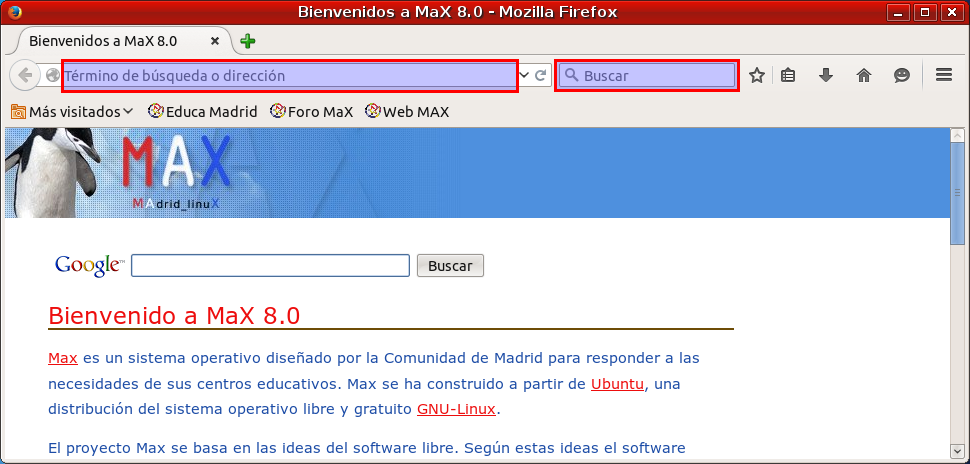
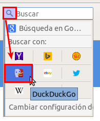

Navegadores
Desde hace ya muchos años el navegador web es la aplicación estrella de los ordenadores, hasta el punto de que cuesta concebir un ordenador sin navegador web. Programa multi-funcional, sirve principalmente para acceder a páginas web remotas, igual que locales, y es capaz de visualizar una cantidad diversa de contenidos: hipertexto, imágenes, vídeos e infografías diversas e interactivas.
MAX trae de serie dos navegadores web: Mozilla Firefox y Chromium. Chromium es básicamente el mismo navegador que Google Chrome, excluyendo todas las partes que no se pueden distribuir manteniendo las mismas libertades: la imagen de la marca Google, algunos complementos y los códecs propietarios para algunos formatos gráficos y de vídeo. Esto es posible gracias a que Chrome es software de código abierto. La gran ventaja de Chromium es su velocidad, es un navegador más ligero que Firefox, arranca muy rápido y visualiza las páginas web ligeramente más rápido que Firefox.

Firefox, software libre, es a día de hoy el tercer navegador más usado en el mundo, después de Chrome e Internet Explorer (este último no existe para Linux) Lleva desde 2004 en el mercado (aunque aparece como herencia de mozilla y este a su vez de Netscape) y fue determinante para terminar con la hegemonía de Internet Explorer, integrado durante muchos años en los sistemas de Microsoft. Sus principales ventajas son la gran cantidad de complementos desarrollados por una amplia comunidad de colaboradores durante muchos años y su tradicional alta compatibilidad con los estándares de páginas web e internet en general que hacen que sea una referencia, junto a Opera, en la correcta visualización de páginas web. Entre los cientos de complementos disponibles, algunos han adquirido una fama notable, como los descargadores de contenidos (flash y otros) los bloqueadores de anuncios, traductores, etc.
Firefox fue el primer navegador web en utilizar varias pestañas para poder tener abiertos varios contenidos a la vez de forma compacta, funcionalidad que hoy en día se hace imprescindible en cualquier navegador, de hecho todos los demás lo han incorporado. Abrir una nueva pestaña es tan fácil como pulsar el símbolo + verde a la derecha de la última pestaña (arriba) pulsar la combinación de teclas CTRL-T, o estando sobre un enlace, en vez de hacer clic con el botón izquierdo del ratón, hacerlo con el botón derecho y elegir la opción de "Abrir en una nueva pestaña".
A estas alturas no vamos a enseñar a nadie a usar un navegador, sólo hacer notar que disponemos de dos lugares por donde se suele empezar: la barra de direcciones, arriba a la izquierda, si conocemos la dirección exacta de la web que vamos a visitar, por ejemplo http://www.educa.madrid.org/ o la barra de búsqueda, arriba a la derecha, donde introducimos un término a buscar y el buscador que tengamos seleccionado por defecto nos mostrará las sugerencias de páginas adecuadas a ese término.

Sí, desde hace un tiempo todos los navegadores tienen la obligación de permitir cambiar el motor de búsqueda, en el caso de Firefox es tan simple como darle al desplegable (flecha para abajo) a la izquierda de la propia barra de búsqueda y elegir entre todos los que propone.

Por último, un repaso pestaña a pestaña por algunas de las Preferencias (En menú Editar) que permite fijar Firefox:
- General: la página que mostrará al inicio, o al abrir nueva pestaña y si al iniciar debe mostrar esa página o las pestañas que tuviera abiertas en la última sesión. También si debe guardar los archivos que descargue automáticamente en una ubicación concreta o preguntar al usuario dónde hacerlo.
- Pestañas: comportamiento de las pestañas, irse automáticamente a una si se abre nueva o permanecer en la que se estaba, etc.
- Contenido: preferencias de Idioma y tipografía de letras por defecto.
- Aplicaciones: en qué aplicaciones apoyarse para contenidos que no pueda mostrar directamente firefox, las opciones por defecto suelen ser buenas para casi cualquier situación.
- Privacidad: controlar si se recuerda el historial o no (Importante para ordenadores compartidos) poder limpiarlo, y opciones de sugerencias.
- Seguridad: bloqueos de sitios, contraseñas (recordar o no, nunca hacerlo en ordenadores compartidos)
- Sync: servicio de sincronización de favoritos, preferencias, historial, complementos y otros en la nube creando una cuenta de mozilla.
- Avanzado: sólo hacer notar que en la subpestaña Red, apartado conexión, está la configuración de Proxy si la red exige navegar a través de proxy.
Por último resaltar la estrellita a la derecha de la barra de direcciones que nos permite añadir una página determinada a los marcadores. Entre las barras que se pueden visualizar está la de marcadores, para tener sus iconos más a mano. Los marcadores se pueden gestionar organizándolos en carpetas y, en las últimas versiones, Firefox permite sincronizarlos en la nube y que viajen con nosotros si navegamos con Firefox desde otros dispositivos.
Curiosidad
Tenga en cuenta que el navegador web no sólo sirve para abrir páginas web remotas, también páginas web ubicadas en su propio ordenador.
Puede hacer la prueba abriendo en Max un tutorial en html, por ejemplo Inicio → MAX 8.0 → Manual de instalación, Fíjese en la dirección que indica la barra de direcciones. Igualmente, si desde el navegador de archivos local de su ordenador, hace doble click en algún archivo html, se abrirá automáticamente con Firefox (o el navegador web que esté definido por defecto).
De hecho podría utilizar Firefox para navegar por los archivos de su ordenador, pero para ello ya está el navegador de archivos que lo hace mucho mejor.